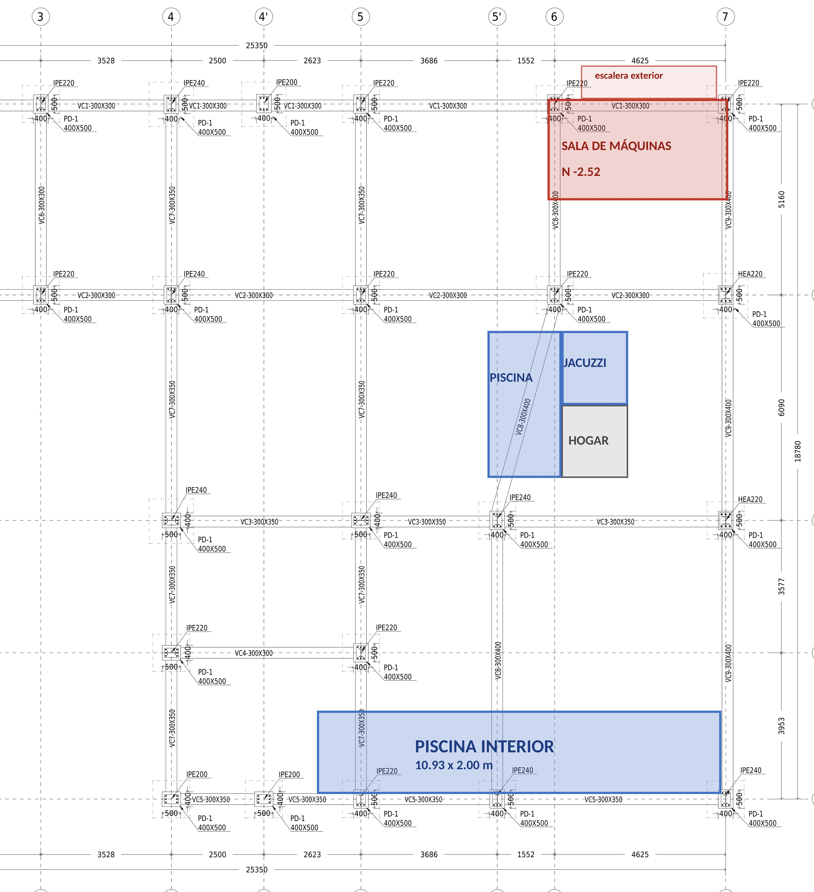

Para Ing. Mateo Cardona Márquez · Intura Grupo Constructor · 4 de noviembre de 2026
El diseño no incluye las piscinas, la sala de máquinas ni todas las cubiertas, y la cimentación choca con ellas.
Plano de muros y dovelas, y si las dovelas se anclan a las vigas de cimentación o a la placa de contrapiso.

Sus respuestas se guardan en este equipo mientras trabaja. Al terminar, o cuando quiera, envíelas a Intura con uno de estos botones. Puede enviarlas varias veces.